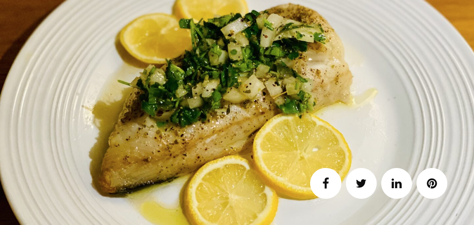
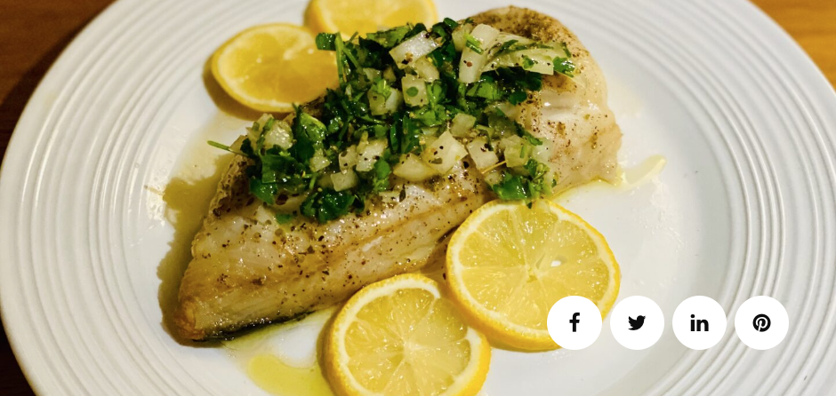

Living in the town of Molyvos on Lesvos Island gives you the opportunity to eat the freshest seafood. I also happen to come from a family that had fishing vessels from the 1900s up until the 1960s. My father was a seafood aficionado so seafood was the main staple of our house. We would eat fish and all other types of seafood at least twice per week, if not 3 times. This particular fish, Black Cod, less known as Sablefish, goes great with my Fresh Parsley salsa. First, Cod and Black Cod are not the same. In fact, the correct name for Black Cod is Sablefish. Sablefish has fatty meat, a velvety and buttery flavor, compared to the white and flaky, leaner, and firmer Cod meat.
With regards to price, Black Cod (Sablefish) is much more expensive than Cod both in restaurants and at the supermarket. If you are on Keto, then Black Cod (Sablefish) is your friend and is up there with Salmon, Mackerel, and Tuna. I use Black Cod to make fish stock/fish broth because of the fat content.